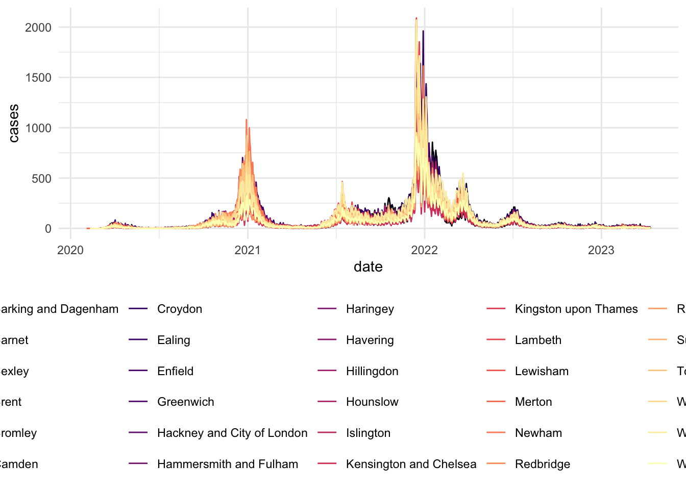
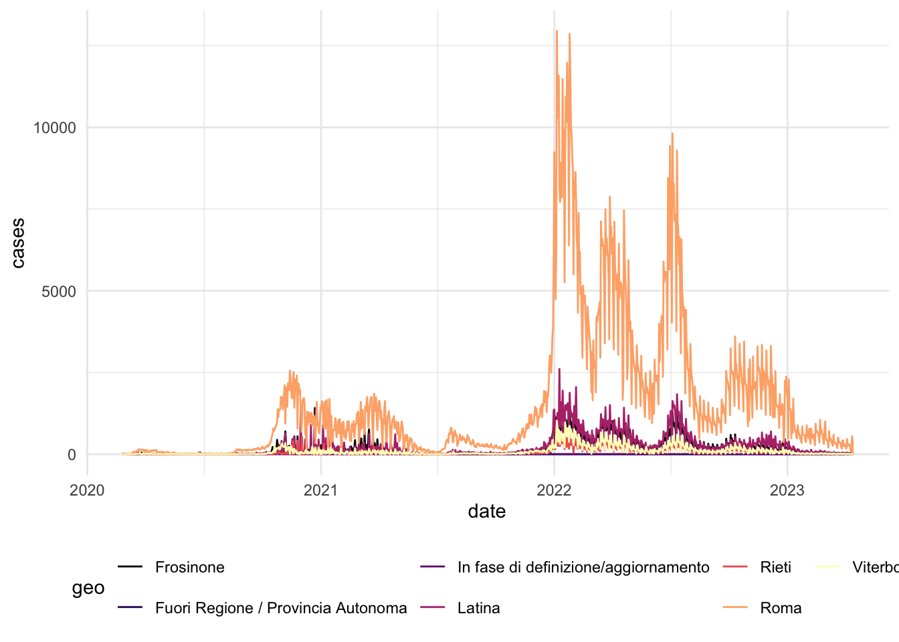
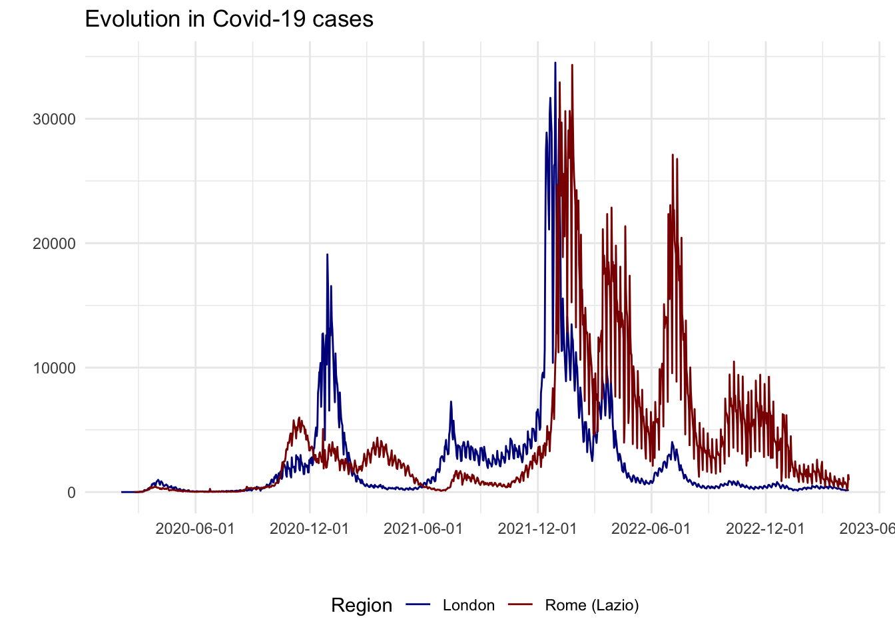
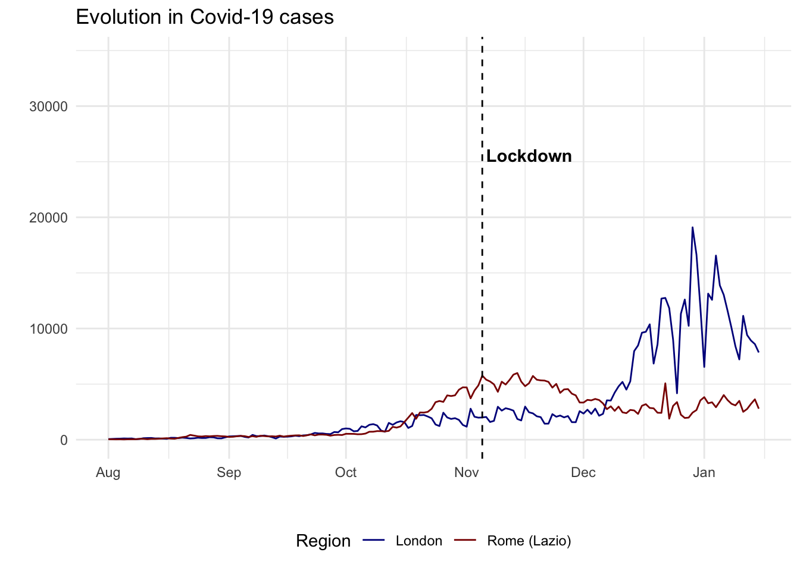
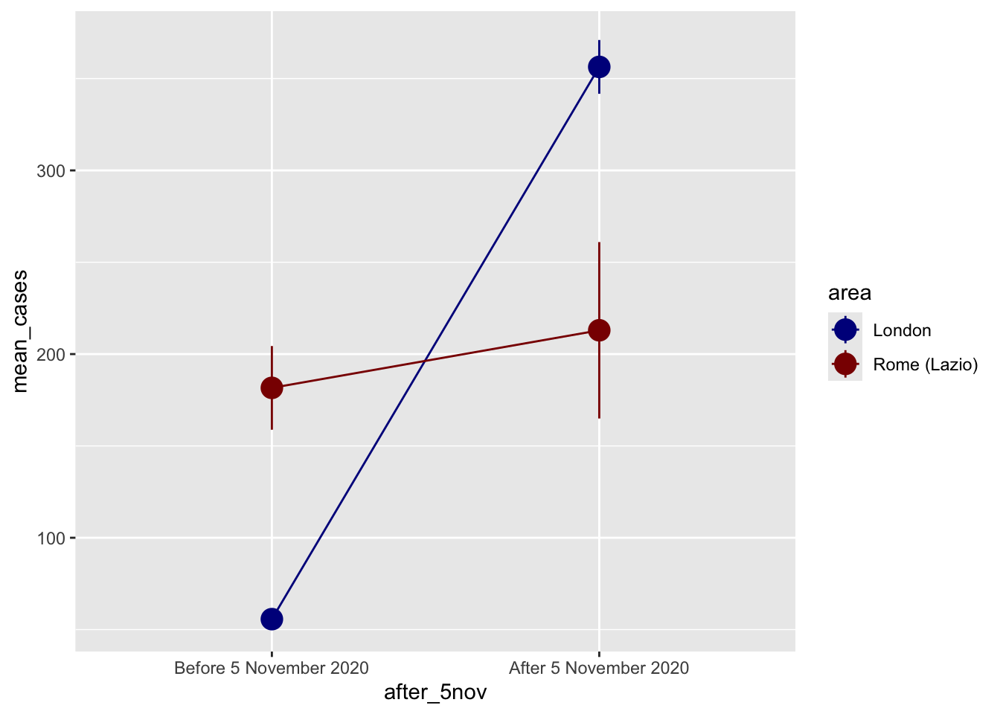
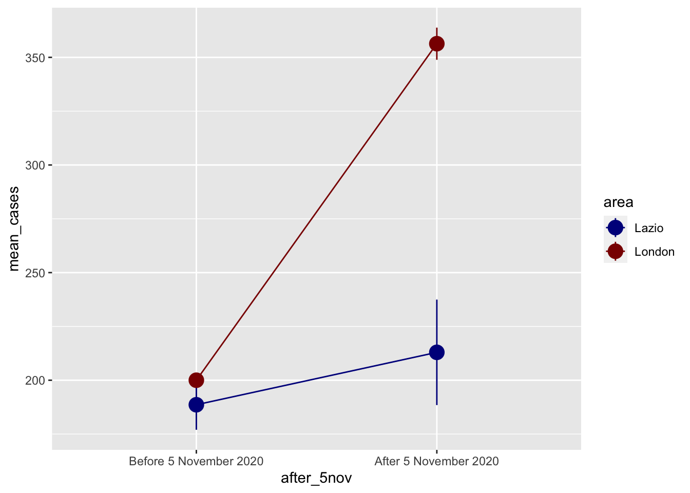
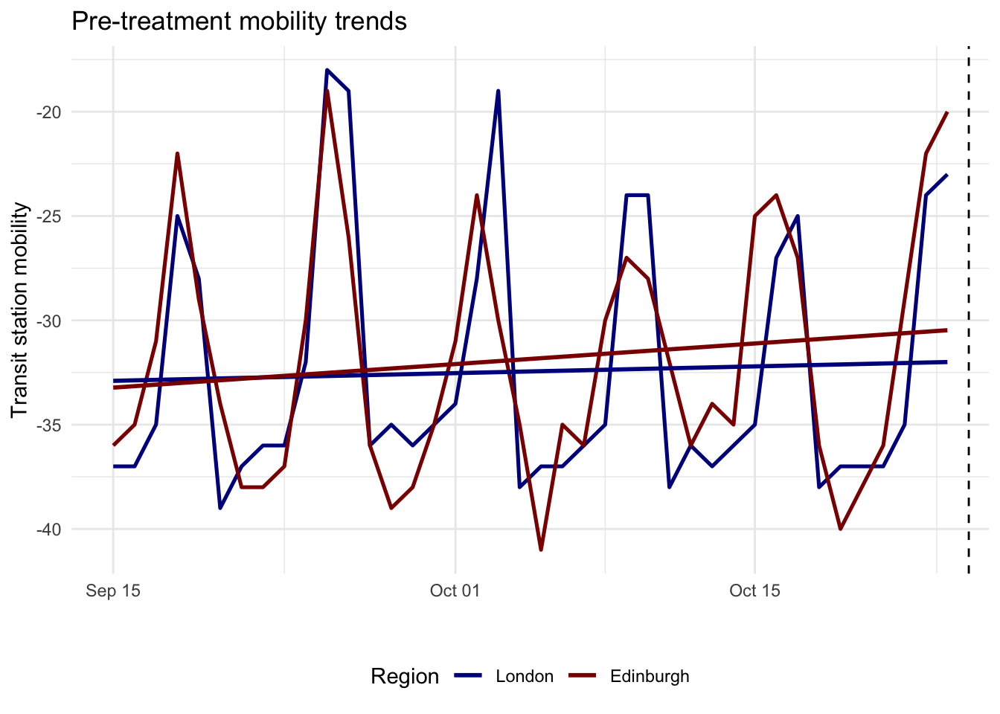

# Data
library(sf)
library(readr)
library(tidyverse)
# Dates and Times
library(lubridate)
# graphs
library(ggplot2)
library(ggthemes)
library(gridExtra)
library(viridis)
library(ggimage)
library(grid)
library(plotly)
# Models
library(modelsummary)
library(broom)
library(gtools)9 Assessing Interventions
Since its outbreak in late 2019, COVID-19 affected millions of people worldwide. One of the ways to track the spread of the disease is through the collection and analysis of data on daily cases, which has become a crucial component of new digital footprint trends. Contact tracing apps and tools were developed and implemented in many countries to help track the spread of COVID-19.
Data on daily cases can help us evaluate the effectiveness of policies implemented during the pandemic, such as lockdowns and other restrictions. By analyzing these data, policymakers and public health experts have gained insights into the impact of these policies on the spread of the disease Brodeur et al. (2021) and (Zhou and Kan 2021). For instance, if daily cases decrease significantly during a lockdown, it could indicate that the policy was successful in controlling the spread of the disease.
Data on daily cases can also help policymakers to make informed decisions about when to implement or lift certain restrictions. For example, if daily cases start to rise again after a lifting of restrictions, it may indicate that it is too early to do so, and that more caution is necessary. In summary, data on daily cases was an essential tool for evaluating the effectiveness of policies implemented during the COVID-19 pandemic and making informed decisions about future policies. As we will see in this chapter, evaluating COVI9-19 policies based onn cases is, unfortunately not so simple.
To assess government interventions during the pandemic, we will be using difference-in-differences (diff-n-diff), a widely-adopted quasi-experimental design, used to evaluate the effect of an intervention or exposure on an outcome of interest. This strategy involves comparing the change in the outcome before and after the intervention or exposure in the treated group, relative to the change in the outcome over the same time period in a control group. By doing so, diff-n-diff can help isolate the effect of the intervention or exposure from other factors that may be driving the outcome.
This chapter is based on :
Goodman-Bacon, Andrew, and Jan Marcus. “Using difference-in-differences to identify causal effects of COVID-19 policies.” (2020)
Andrew Heiss’ chapter on Difference-in-differences
Brodeur, Abel, et al. “COVID-19, lockdowns and well-being: Evidence from Google Trends.” Journal of public economics 193 (2021): 104346.
9.1 Dependencies
9.2 Data
First let’s import the Greater London COVID-19 data:
# import csv
covid_cases_london <- read.csv("data/longitudinal-2/covid_cases_london.csv", header = TRUE)
# check out the variables
colnames(covid_cases_london) [1] "areaType" "areaName"
[3] "areaCode" "date"
[5] "newCasesBySpecimenDate" "cumCasesBySpecimenDate"
[7] "newFirstEpisodesBySpecimenDate" "cumFirstEpisodesBySpecimenDate"
[9] "newReinfectionsBySpecimenDate" "cumReinfectionsBySpecimenDate" Then we do the same for the Lazio area data, which is the Region of the capital of Italy, Rome. We are choosing this region because it did not see sharp peaks in COVID-19 cases during the winter of 2020/2021.
# import csv
covid_cases_lazio <- read.csv("data/longitudinal-2/covid_cases_lazio.csv", header = TRUE)
# check out the variables
colnames(covid_cases_lazio) [1] "data" "stato"
[3] "codice_regione" "denominazione_regione"
[5] "codice_provincia" "denominazione_provincia"
[7] "sigla_provincia" "lat"
[9] "long" "totale_casi" First we need to clean up the data somewhat and rename some variables in both dataframes to have 4 variables:
date: year-month-daygeo: geographical regioncases: number of COVID-19 cases that dayarea: Lazio (Rome) or London
# Rename the variables in the Lombardia data frame
covid_cases_lazio_ren <- covid_cases_lazio %>%
rename(date = data , geo = denominazione_provincia, totalcases = totale_casi)
# Group the data by region and calculate total cases for each day (not cumulative cases)
covid_cases_lazio_daily <- covid_cases_lazio_ren %>%
group_by(geo) %>%
mutate(cases = totalcases - lag(totalcases, default = 0)) %>%
select(date, geo, cases) %>%
mutate(area = "Rome (Lazio)") %>%
filter(cases >= 0)
#df_milan <- covid_cases_lombardia_new %>%
# filter(geo == "Milano", new_cases >= 0)
# Rename the variables in the first data frame
covid_cases_london_ren <- covid_cases_london %>%
rename(date = date , geo = areaName, cases = newCasesBySpecimenDate) %>%
select(date, geo, cases) %>%
mutate(area = "London")
# Correct date format
covid_cases_london_ren$date <- as.Date(covid_cases_london_ren$date)
covid_cases_lazio_daily$date <- as.Date(covid_cases_lazio_daily$date)
# Append the renamed data frame to the second data frame
covid_combined <- rbind(covid_cases_london_ren, covid_cases_lazio_daily)
# Add a variable of log of cases
covid_combined <- covid_combined %>%
mutate(log_cases = log(cases))9.3 Data Exploration
Similarly to the previous chapter. Let’s start by eyeballing the data.
# Visualizing Cases in London
covid_cases_1 <- ggplot(data = covid_cases_london_ren, aes(x = date, y = cases, color=geo)) +
geom_line() +
scale_color_viridis(discrete = TRUE, option="magma") +
theme_minimal() +
theme(
legend.position = "bottom")
labs(
x = "",
y = "",
title = "Evolution in Covid-19 cases",
color = "Region"
) +
scale_x_date(date_breaks = "6 months")NULL covid_cases_1
# Visualizing Cases in Lazio (Rome)
covid_cases_2 <- ggplot(data = covid_cases_lazio_daily, aes(x = date, y = cases, color=geo)) +
geom_line() +
scale_color_viridis(discrete = TRUE, option="magma") +
theme_minimal() +
theme(
legend.position = "bottom")
labs(
x = "",
y = "",
title = "Evolution in Covid-19 cases",
color = "Region"
) +
scale_x_date(date_breaks = "6 months")NULLcovid_cases_2
To identify whether there is a timeperiod where a lockdown was implemented in one location but not the other, and how cases evolved, we can plot aggregates of both locations in one plot.
# Aggregate the data by region for each day
covid_combined_agg <- aggregate(cases ~ area + date, data = covid_combined, FUN = sum)
# Visualizing aggregated
covid_cases_3 <- ggplot(data = covid_combined_agg, aes(x = date, y = cases, color=area)) +
geom_line() +
scale_color_manual(values=c("darkblue", "darkred")) + # set individual colors for the areas
theme_minimal() +
theme(
legend.position = "bottom"
) +
labs(
x = "",
y = "",
title = "Evolution in Covid-19 cases",
color = "Region"
) +
scale_x_date(date_breaks = "6 months")
covid_cases_3
From an initial look at the data, the 2020/2021 winter period seems interesting as there is a high increase in London cases but not as much as a peak in Lazio cases. In fact, after a quick review of COVID-19 lockdowns, we found that:
- On the 5th of November 2020, the UK Prime Minister announced a second national lockdown, coming into force in England
- On 4 November 2020, Italian Prime Minister Conte announced a new lockdown as well, however this lockdown divided the country into three zones depending on the severity of the pandemic, corresponding to red, orange and yellow zones. The Lazio region, was a yellow zone for the duration of this second lockdown. In yellow zones, the only restrictions included compulsory closing for restaurant and bar activities at 6 PM, and online education for high schools only.
# Usual chart
covid_cases_4 <- ggplot(data = covid_combined_agg, aes(x = date, y = cases, color=area)) +
geom_line() +
scale_color_manual(values=c("darkblue", "darkred")) + # set individual colors for the areas
theme_minimal() +
theme(
legend.position = "bottom"
) +
labs(
x = "",
y = "",
title = "Evolution in Covid-19 cases",
color = "Region"
) +
scale_x_date(limit=c(as.Date("2020-08-01"), as.Date("2021-01-15"))) +
geom_vline(xintercept=as.numeric(as.Date("2020-11-05")), linetype="dashed") +
annotate("text", x=as.Date("2020-11-06"), y=25000, label="Lockdown",
color="black", fontface="bold", angle=0, hjust=0, vjust=0)
covid_cases_4
We could make some assumptions and set this up as a quasi experiment. In social science, researchers are often using natural or quasi experimental setting as randomized experiments can rarely be conducted. This involves splitting the population at hand into a treatment and control group.
9.4 Difference in Difference
Plotting Means
For a diff-in-diff analysis using COVID data, possible shocks that would make this type of quasi-experiment possible could be the following:
National lockdown: The first national lockdown in the UK was announced on March 23, 2020. This sudden shock to the economy and society could be used as a treatment group for the diff-in-diff analysis, with the pre-lockdown period as the control group.
Regional lockdowns: The UK also implemented regional lockdowns throughout the pandemic, with different regions experiencing restrictions at different times. These regional lockdowns could be used as treatment groups, with regions that did not experience lockdowns as the control group.
School closures: In response to the pandemic, schools in the UK were closed from March 20, 2020, until June 1, 2020, and then again from January 5, 2021, until March 8, 2021. The impact of school closures on education outcomes could be studied using a diff-in-diff approach, with the period before school closures as the control group.
Travel restrictions: The UK implemented various travel restrictions throughout the pandemic, including quarantine requirements for travelers from certain countries. The impact of these travel restrictions on the tourism industry or the spread of the virus could be studied using a diff-in-diff approach.
Vaccine rollout: The UK began its COVID-19 vaccination program in December 2020. The impact of the vaccine rollout on various health and economic outcomes could be studied using a diff-in-diff approach, with the period before the rollout as the control group.
These are just a few examples of shocks that could be used for a diff-in-diff analysis using COVID data. The choice of shock will depend on the research question and the data available.
The DiD approach includes a before-after comparison for a treatment and control group. In our example:
A
cross-sectional comparison(= compare a sample that was treated (London) to an non-treated control group (Rome))A
before-after comparison(= compare treatment group with itself, before and after the treatment (5th of November))
The main assumption is that without the change in the natural environment the outcome variable would have remained constant!
First, we create a dummy variable to indicate the time when the treatment started. In our case this will be the 5th of November 2020. We will also limit the time-span of our data.
# keep data from 2020-09-01 to 2021-01-01
covid_combined_filtered <- covid_combined %>%
filter(date >= "2020-09-01" & date <= "2021-01-01")
# create a dummy variable to indicate the time when the treatment started (5 Nov 2020)
covid_combined_filtered <- covid_combined_filtered %>%
mutate(after_5nov = ifelse(date >= "2020-11-05", 1, 0)) #changed to 05 Nov# Create a frequency table of area and treatment
freq_table <- table(covid_combined_filtered$area, covid_combined_filtered$after_5nov)
# Print the frequency table
print(freq_table)
0 1
London 3150 540
Rome (Lazio) 1436 240We then want to plot averages to see differences between treatment/control groups and before/after. But we can also calculate the mean and 95% confidence interval. We can also use group_by() and summarize() to figure out group means before sending the data to ggplot.
plot_data <- covid_combined_filtered %>%
# Make these categories instead of 0/1 numbers so they look nicer in the plot
mutate(after_5nov = factor(after_5nov, labels = c("Before 5 November 2020", "After 5 November 2020"))) %>%
group_by(area, after_5nov) %>%
summarize(mean_cases = mean(cases),
se_cases = sd(cases) / sqrt(n()),
upper = mean_cases + (1.96 * se_cases),
lower = mean_cases + (-1.96 * se_cases))
ggplot(plot_data, aes(x = area, y = mean_cases)) +
geom_pointrange(aes(ymin = lower, ymax = upper),
color = "darkred", size = 1) +
facet_wrap(vars(after_5nov))
Here, we can start to see a diff-in-diff plot, where there is little to no difference in means with our control city (Rome-Lazio) and a substancial jump in means in our treatment city (London). It looks there were many more cases of COVID-19 after the 5th of march in London, indicating the lockdown did not have an effect, at least in this time-frame. Why could that be?
We can also plot a more standard diff-in-diff format:
ggplot(plot_data, aes(x = after_5nov, y = mean_cases, color = area)) +
geom_pointrange(aes(ymin = lower, ymax = upper), size = 1) +
geom_line(aes(group = area)) +
scale_color_manual(values = c("darkblue", "darkred"))
This second plot shows us it is probable that our diff-n-diff set up will not work. A clean classic diff-n-diff would look more like the following. Please note the following plot is theoretical.
# import csv
covid_perfect_example <- read_csv("data/longitudinal-2/example_covid.csv")
# label pre/post labels
covid_perfect_example <- covid_perfect_example %>%
mutate(after_5nov = factor(after_5nov, labels = c("Before 5 November 2020", "After 5 November 2020")))
# plot
ggplot(covid_perfect_example, aes(x = after_5nov, y = mean_cases, color = area)) +
geom_pointrange(aes(ymin = lower, ymax = upper), size = 1) +
geom_line(aes(group = area)) +
scale_color_manual(values = c("darkblue", "darkred"))
Difference in Difference by hand
We can find the exact difference by filling out the 2x2 before/after treatment/control table:
| Before | After | Difference | |
|---|---|---|---|
| Treatment | A | B | B - A |
| Control | C | D | D - C |
| Difference | C - A | D - B | (D − C) − (B − A) |
A combination of group_by() and summarize() makes this really easy. We can pull each of these numbers out of the table with some filter()s and pull():
before_treatment <- covid_perfect_example %>%
filter(after_5nov == "Before 5 November 2020", area == "London") %>%
pull(mean_cases)
before_control <- covid_perfect_example %>%
filter(after_5nov == "Before 5 November 2020", area == "Lazio") %>%
pull(mean_cases)
after_treatment <- covid_perfect_example %>%
filter(after_5nov == "After 5 November 2020", area == "London") %>%
pull(mean_cases)
after_control <- covid_perfect_example %>%
filter(after_5nov == "After 5 November 2020", area == "Lazio") %>%
pull(mean_cases)
diff_treatment_before_after <- after_treatment - before_treatment
diff_treatment_before_after[1] 156.35diff_control_before_after <- after_control - before_control
diff_control_before_after[1] 24.35387diff_diff <- diff_treatment_before_after - diff_control_before_after
diff_diff[1] 131.9961The diff-in-diff estimate is 131.99, which means that the lockdown here caused an increase in cases in the time-window we are analysing. Not it’s intended effect!
We can visualise this really well with a bit of extra code:
ggplot(covid_perfect_example, aes(x = after_5nov, y = mean_cases, color = area)) +
geom_point() +
#geom_pointrange(aes(ymin = lower, ymax = upper), size = 1) +
#geom_line(aes(group = area)) +
geom_line(aes(group = as.factor(area))) +
scale_color_manual(values = c("darkblue", "darkred")) +
# If you use these lines you'll get some extra annotation lines and
# labels. The annotate() function lets you put stuff on a ggplot that's not
# part of a dataset. Normally with geom_line, geom_point, etc., you have to
# plot data that is in columns. With annotate() you can specify your own x and
# y values.
annotate(geom = "segment", x = "Before 5 November 2020", xend = "After 5 November 2020",
y = before_treatment, yend = after_treatment - diff_diff,
linetype = "dashed", color = "grey50") +
annotate(geom = "segment", x = "After 5 November 2020", xend = "After 5 November 2020",
y = after_treatment, yend = after_treatment - diff_diff,
linetype = "dotted", color = "blue") +
annotate(geom = "label", x = "After 5 November 2020", y = after_treatment - (diff_diff / 2),
label = "Program effect", size = 3)
It is important for all diff-in-diff analyses to give careful attention to possible violations of the common trends assumption, especially considering the COVID-19 situation where many of these violations are likely to occur. Furthermore, due to the unique dynamics of COVID-19 such as lags between exposure and recorded infections, nonlinearities from person-to-person transmission, and the possibility of policies having differential effects over time, it further complicates the potential risks to the diff-in-diff research design.
(Goodman-Bacon and Marcus 2020) comment on the following problems which can be consulted in their paper:
Packaged Policies
Reverse Causality
Voluntary Precautions
Difference Data collection
Anticipation Spillovers
Variation in Policy Timing
(Goodman-Bacon and Marcus 2020) also give great recommendations on how to address these problems, but this is far beyond the objective of this chapter.
Difference-in-Difference with regression
Calculating all the pieces by hand like that is tedious, so we can use regression to do it instead! Remember that we need to include indicator variables for treatment/control and for before/after, as well as the interaction of the two.
This is the equation:
\(\Delta Y_{gt} = \beta_0 + \beta_1 London_{g} + \beta_2 Post5Nov_{t} + \beta_3 London_{g} \times Post5Nov_{t} + \beta_4 Rome_{g} + \epsilon_{gt}\)
The output will show the diff-in-diff coefficient estimate, standard error, t-value, and p-value, which can be used to determine whether there was a significant effect of the second lockdown 4 on Covid cases in November 2020.
model_small <- lm(cases ~ area + after_5nov + area * after_5nov,
data = covid_combined_filtered)
# Tidy the model output
diffndiff1 <- tidy(model_small)
# Add significance stars using stars.pval from gtools
diffndiff1$stars <- stars.pval(diffndiff1$p.value)
# View the results
diffndiff1# A tibble: 4 × 6
term estimate std.error statistic p.value stars
<chr> <dbl> <dbl> <dbl> <dbl> <chr>
1 (Intercept) 55.7 4.47 12.5 3.62e- 35 ***
2 areaRome (Lazio) 126. 7.99 15.8 8.81e- 55 ***
3 after_5nov 301. 11.7 25.7 7.63e-138 ***
4 areaRome (Lazio):after_5nov -269. 21.0 -12.8 5.37e- 37 *** # Create a model summary table for the model
summary_table <- modelsummary(list("Simple" = model_small), estimate =c("{estimate}{stars}"))
# View the results
summary_table| Simple | |
|---|---|
| (Intercept) | 55.694*** |
| (4.469) | |
| areaRome (Lazio) | 125.910*** |
| (7.986) | |
| after_5nov | 300.656*** |
| (11.681) | |
| areaRome (Lazio) × after_5nov | −269.302*** |
| (21.032) | |
| Num.Obs. | 5366 |
| R2 | 0.130 |
| R2 Adj. | 0.130 |
| AIC | 74524.8 |
| BIC | 74557.7 |
| Log.Lik. | −37257.375 |
| RMSE | 250.71 |
9.5 Questions
For the assignment, you will continue to use Google Mobility data for the UK for 2021. For details on the timeline you can have a look here. You will need to do a bit of digging on when lockdowns or other COVID-19 related shock happened in 2021 to set up a diff-in-diff strategy. Have a look at Brodeur et al. (2021) to get some inspiration. They used Google Trends data to test whether COVID-19 and the associated lockdowns implemented in Europe and America led to changes in well-being.
Start by loading both the csv
mobility_gb <- read.csv("data/longitudinal-1/2021_GB_Region_Mobility_Report.csv", header = TRUE)Visualize the data with
ggplotand identify what section of the data could be used to evaluate a COVID-19 intervention. Examples of these interventions could be a regional lockdown, school closures, travel restrictions or vaccine rollouts. Generate a cleanggplotwhich indicates which intervention you are going to examine.Explore differences in means through a
frequency tableand a graph of these averages. Chose whichever suits your purposes best.Define and estimage a diff-in-diff regression. What do the results suggest? Was the intervention you chose effective? Discuss the reasons why it was or was not.
Discuss how the unique dynamics of COVID-19 and the possibility of policies having differential effects over time complicate the interpretation of your results.
Analyse and discuss what insights you obtain into people’s changes in behaviors during the pandemic in responde to an intervention.